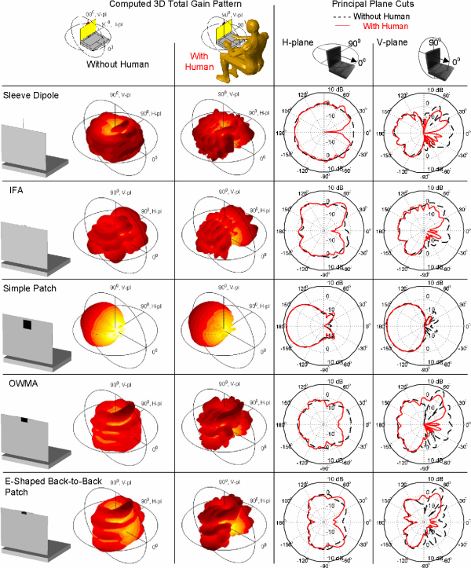
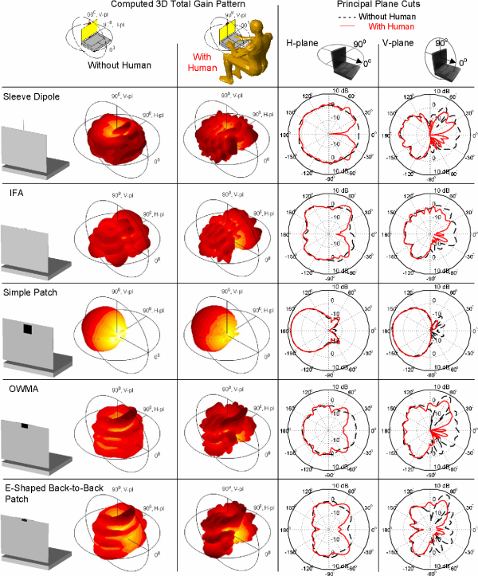

Radio-frequency (RF) retroreflector attack (RFRA) is an active electromagnetic side-channel attack that aims to leak the target's internal signals by irradiating the targeted device with a radio wave, where an attacker has embedded a malicious circuit (RF retroreflector) in the device in advance. As the retroreflector consists of small and cheap electrical elements, such as a field-effect transistor (FET) chip and a wire that can work as a dipole antenna, the reflector can be embedded into various kinds of electric devices that carry unencrypted, sensitive information;, e.g., keyboard, display monitor, microphone, speaker, USB, and so on. Only a few studies have addressed the RFRA. However, they did not evaluate the conditions for a successful attack scientifically, and therefore, assessing the feasibility of the RFRA remains an open issue. In the present study, we aim to evaluate the conditions for a successful RFRA, empirically, through extensive experiments. Understanding attack limitations should help to develop effective countermeasures against it. In particular, as the conditions for a successful attack, we studied the distance between the attacker and the target, and the target signal frequencies. Through the extensive experiments, using off-the-shelf hardware, including software-defined radio (SDR) equipment, we revealed that the required conditions for a successful attack are (1) up to a 10-Mbps of a target signal and (2) up to a distance of 10 meters. We also demonstrated that a USB keyboard, using USB low-speed (1.5 Mbps), is attackable, and we succeeded to eavesdrop typing. We conclude that the RFRA threat is realistic.
Havana syndrome https://www.bbc.com/news/world-58396698
anod shield

 

Images from: https://wipl-d.com/laptop-with-inverted-f-antenna/ https://www.semanticscholar.org/paper/Comparison-study-of-electromagnetic-human-with-2.4-Guterman-Moreira/b4e077c9897fd99a247675d040cff51202e7b847
https://core.ac.uk/download/pdf/286963353.pdf